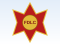

Информационный отдел Пожарного Департамента Либерти-Сити (FDLC)Лучшие исполнители города.
Ваше текущее местоположение: Брокер, Либерти-Сити.
Ближайшая пожарная станция: Брокер, Хоув-Бич, Станция №96.
КОДЕКС
Пожарная безопасность, обязательства предпринимателей, подготовка к инспекциям.
РАБОТА

Городу постоянно не хватает квалифицированных* сотрудников. Попробуйте себя парамедиком или пожарным! Экстренная медицинская служба обещает рабочим отсутствие седьмого круга ада** при прохождении официального курса лечения.
*Главное требование к сотрудникам EMS это знание первой помощи, остальное забота больниц и кошелька застрахованных.
**Ускорить помощь можно, упомянув свой статус в приёмной больницы.
Контакты станции №96
Leopold Jefferson
Шеф EMS
Oliver Gray
Шеф Департамента FDLC
Дополнительная информация
КАК НАЧАТЬ РАБОТАТЬ В ПОЖАРНОМ ДЕПАРТАМЕНТЕ?
Сейчас идёт отбор на должности:
- Парамедик
- Инженер
- Инспектор
Из-за нехватки финансирования заявки принимает действующий состав EMS. О требованиях можно узнать в мэрии, в гос. представительствах или в ближайшем участке LCPD. Продвижение выше парамедика или пожарного обсуждается со старшим составом станции.
ПЕРВАЯ ПОМОЩЬ
Вызовите скорую и ждите помощи! Памятка для напоминания сотрудникам:
- Проверьте пульс, осмотрите тело на повреждения
- Перебинтуйте открытые раны, при сильной кровопотере введите физраствор
- Проверьте, не принимал ли человек наркотики, при положительном тесте нужны дополнительные препараты
- Проведите СЛР
Если дальше идти некуда, человека объявляют мёртвым, упаковывают и отправляют в морг на экспертизу.
ПРОФИЛАКТИКА ПЕРЕДОЗИРОВКИ

Противоядия под рукой вряд ли окажутся, поэтому снова зовите скорую и назовите вещество парамедикам.
- Морфин, фентанил, героин: налоксон
- Кокаин, крэк: адреналин
- Конопля, алкоголь: сообщите в полицию
- Метамфетамин: звоните в ритуальные услуги
Лучше всего отображается при разрешении 800x600.
Вы наш посетитель номер 000417